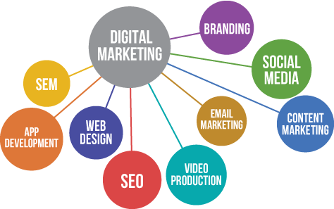

Digital marketing is an umbrella term for the marketing of products or services using digital technologies, mainly on the Internet, but also including mobile phones, display advertising, and any other digital medium.
The promotion of products or brands via one or more forms of electronic media. One of the reasons why digital marketing is taking over traditional marketing channels is the ability of Internet marketing tools to interact with targeted audiences in real time. Engagement in any form is what your customers expect to receive when interacting with your brand or business.

Why Digital Marketing?
- Digital marketing levels the online playing field.
- Digital marketing is more cost-effective than traditional marketing.
- Digital marketing delivers conversion.
- Facilitates Interaction with targeted Audiences.
- Digital marketing caters to the mobile consumer.
- Digital marketing earns peoples trust.